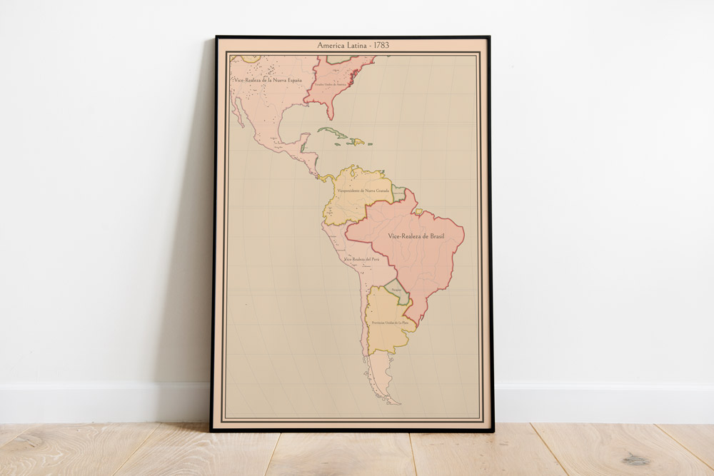
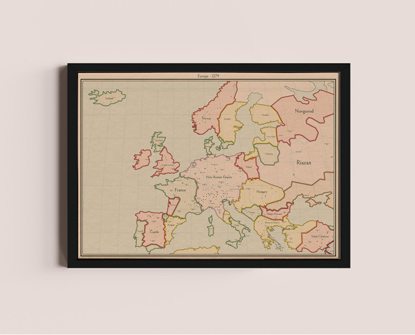
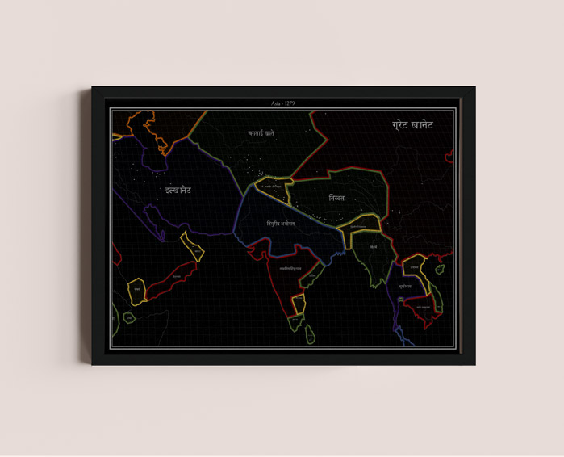
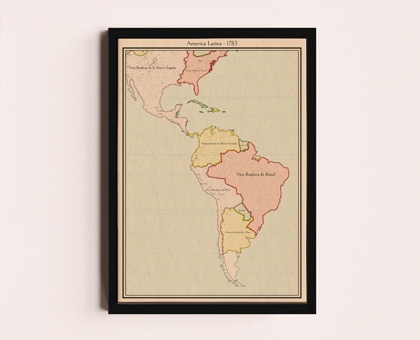
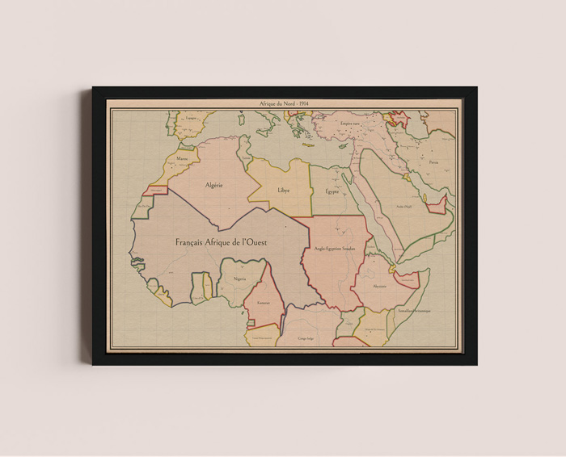

Design examples
Customize any of the following

Choose the year
Starting from €30

Choose the color
Starting from €30

Choose the direction
Starting from €30

Choose much more
Starting from €30
About
Today we go to antique stores or second hand websites for exploring vintage maps, but unfortunately we cannot customize them.
A challenge I tried to solve by combining modern web technologies and open source projects like D3.js and historical-base-maps.
The result is an accessible web application, open for anyone to try out. Developed by a single software developer with a passion for Geography and History, it was made during the long lockdown evenings of 2020/2021.
FAQ
What is the average delivery time?
The prints are shipped from the Netherlands. For the Benelux it takes 1 - 3 days. In other European countries 4 - 11 days. The rest of the world is 5 - 13 days.
I found a mistake in your map, what now?
Mistakes happen, especially in historical data. Keep in mind that the actual concept of territory and national boundary becomes meaningful, in Europe, only since the Peace of Westphalia (1648).
If it's a mistake in the country borders or names, please report an issue on the GitHub of Historical Basemaps, when it's fixed I will make sure to update Vintage Maps.
For other mistakes please contact me.
Contact
Do you have any feedback or questions? Please contact lennert@vintagemaps.io